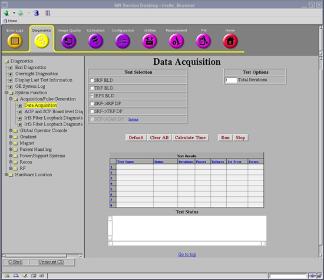
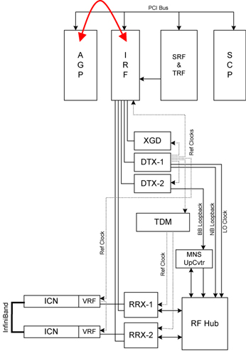

Operating Documentation
Direction 5670006, Rev# 1
Discovery MR750w GEM Service Methods
Module Version 3.0, Version Date 8/19/08
Operating Documentation |
Diagnostics >> System Function >> Acquisition/Pulse Generation >> Data Acquisition
Diagnostics >> Hardware Location >> PGR Cabinet >> CAM >> Data Acquisition
Illustration 1: IRF3 BLD

The IRF3 Board Level Diagnostic tests the circuitry internal to the IRF3 board. The test is run from the AGP board that accesses the IRF3 board over the cPCI bus.
The internal memory buffers of the IRF3.
The internal data paths of the IRF3.
The logic state machines of the IRF3.
None
Illustration 2: IRF3 Block Diagram

Select IRF3 BLD from the Data Acquisition screen.
Click [Run].
Review the Test Results table to see if the diagnostic passed or failed.
Output values are judged pass or fail. In the event of failure, the details of the failure can be found in the GE System Log.